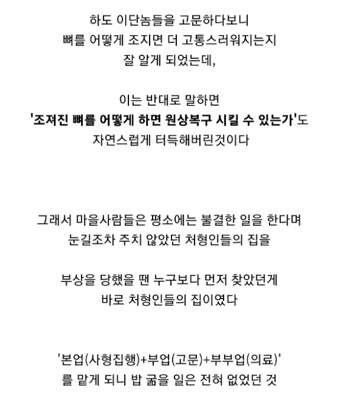

조지는거만 하는건데 치료에 눈을 뜰수가 있나? 이근안은 그럼 명의여? 먼 말도안되는
해부학이 왜 의학일까?
넌 레고 잘 부수는 거랑 조립 잘하는 거랑 같다고 생각해?
원래 조립과 분해는 하나임
해부학이 왜 의학일까?
의사 앞에서 그렇게 단순한 소리만 지껄일 것 같음 걍 꺼져라. 해부학 공부 안해도 고문하는 데 아무 지장 없음.
해부학이 왜 의학이냐니까 뭔소리해?
해부가 사람 살리는 일임?
넌 레고 조립할 때 조립 설명서가 왜 들어있는지 모르냐? 해부학이 그 조립 설명서 같은 거야. 관절이 어떻게 구성되어 있고 인대가 뼈의 어느 부위에 붙어 있는지.. 해부학은 해체를 위한 설명서가 아니란다. 고문하는 데 해부학 배워야 할 수 있냐?
리버스 엔지니어링이란 단어가 왜 있을까
리버스 엔지니어링을 공부한 사람이 잘하겠지. 고문만 한다고 의학을 잘하게 되진 않음. 애시당초 리버스 엔지니어링은 공학이고 의학은 공학이랑 다름. 팔다리 자르는 건 의학 안배운 문외한도 다 할 수 있지만 팔다리 잘린 거랑 몸통 준다고 다 붙일 수 있음? 근데 분해된 레고는 누구나 붙일 수 있잖아.
의료행위를 한다고 해서 현대 수준의 전문성 있다는 걸 얘기하는 건 아님
루이 14세의 주치의는 병을 예방한다며 치아를 전부 빼 버리는 미친 짓까지 했고
역병의사들은 방혈로 모든 병을 치료할 수 있다고 믿었으며
의사들이 이전 환자들 피 묻은 옷 그대로 입고 아이 받다보니 전문 교육 안 받은 산파보다 출산시 산모 생존률이 더 낮았던 시기임
그냥 남들보다 신체를 잘 아니까 의료행위를 했다 정도로 생각하면 됨
제대로 된 의료행위는 아니었겠지. 근데 댓글 방향은 조립은 분해의 역순이다. 식으로 해석하고 있으니 한 말임. 제대로 된 조립도 아닌데 말이지.
댓글들은 당연히 드립치는거지.. 여기 개드립이야
병신새끼가 존나 문맥을 못 읽고 단어에 집착하니까 사람들이랑 대화가 안되는거임.
병신아. 너 같이 이해력이 딸리는 사람들이 오해할 수도 있다는 지적이었다.
ㄴㄴ 그냥 너 같이 이해력 딸리는 놈이 착각한 것의 자백이겠지
왜냐하면 마취가 일반화되기 전까지 외과술은 전문 의료 행위보다는 전문 기술로 인식됐기 때문임
근대 의학이 정립된 이후에도 마취 없던 시절엔 '얼마나 덜 고통스럽게 상처 부위를 빠르게 절단하느냐'가 실력이었던 게 외과술임ㅇㅇ
그보다 이전인 중세~초기근대엔 전문 의료인들은 대체로 해부, 외과적 수술 잘 안 하려고 했고 대신 사람한테 칼 대는 일이 잦은 이발사, 사형 집행인이 부업으로 했음
그래서 일단 박아둬야 하는 틀이
지금처럼 외과 의학 전문 영역이 있고 외과의가 되기 위해 수련한다 -> X
사람한테 칼 대는 것 자체가 천한 일이라 사람한테 칼 대는 직종 사람들이 외과의를 겸한다 -> O
임
그러니까 분해하는 사람들이 조립하는 법도 공부하고 실습, 치료 행위를 할 여건이 됐던 거임
그렇다고 이 사람들이 자의적이거나 비전문적인 의료 행위를 주먹구구식으로 했냐 하면 그렇지 않음
일단 사형 집행인 얘기니까 이쪽으로 초점 맞춰보면 외과의 겸하는 사형 집행인은 사형이나 고문(이것도 부업) 집행할 때 죄수들을 의학 실습 교보재로 씀
당시 의학이 사체액설 기반 중세 의학이라 엉터리가 많긴 했어도, 중요한 건 글자 읽는 것 자체가 전문 기술인 시대에 이 사람들도 의학서를 공부하고 실습했다는 거임
그리고 기본적으로 대를 이어서 물려받는 직업이었기 때문에 도제식으로 수련, 지식 계승 구조도 있었음
이와 관련해서 상세한 기록 남긴 사람이 프란츠 슈미트라는 사형 집행인인데,
이 사람은 50년 가량 사형 집행인으로 활동하는 동안 맡은 사형 건수가 350~400건였던 반면 의료 활동 건수는 15000건이었음
치료 종류는 탈구, 골절상 환자 치료, 상처 봉합, 소독, 발치, 절단술, 백내장 수술, 약초 채집 및 처방, 약 제조 등이 있음
물론 말 그대로 부업이기 때문에 외과의를 겸하지 않는 사형 집행인도 있었고, 당시 의학이 의학이냐 라고 생각하면 네 생각이니 어쩔 수 없긴 함
근데 나는 당시 의학 수준이 얼마나 저열한가보다는 이 사람들이 당시 메이저 의학을 공부하긴 했다는 것 자체가 중요하다고 봄
의학 수준이라는 시대적 한계가 있었던 거지, 내가 외과의를 겸하겠다고 하면 의학 지식을 쌓고 실습과 수련하면서 전문성은 쌓았다는 거니까ㅇㅇ
중세시대에서 외과는 이발사나 사형집행인이나 하는 천대받는 직업이였고 그렇기 때문에 외과적 지식이라는게 주먹구구식으로 발달함
일반인은 살인자가 아닌이상 인체의 구조나 내부에 대해 알 수가 없으므로
사형집행인들은 남들보다 조금 더 사체에 접근하기 용이한 직업이다보니 지식이 쌓일 수 밖에 없는 구조임
해부학이 왜 의학일까?
같진 않지만 조립을 잘할려면 부수는것도 잘해야함
그냥 많이 만져본놈이 더 잘 안다 그정도라는걸 과장해서 말하는거임 엄근진 ㄴㅋ
실제로 저랬다는데 말이 되고 안되고가 뭐있어.
뭐 문명화된 유럽 백인님들은 시골 촌부가 다리 골절나면 파리 대학에서 의예과나오신 귀족출신 외과의가 왕진와서 전문적으로 접골 집도라도 해주셨을거라 생각하는거야?
그냥 관절 많이 만져본놈한테 가는거지
그렇게 창조주만 따르고 그외는 다 탄압하는 놈들이 아프다고 병원은 왜 간거야?
아픈것도 창조주의 뜻 아닌가
병원이 있는것도 하나님의 뜻ㅋㅋ
조립은 분해의 역순
어잇... 야하...와..
트로스키 고문기술자놈 찾아서 복수하고 싶었는데 끝내 못 찾음